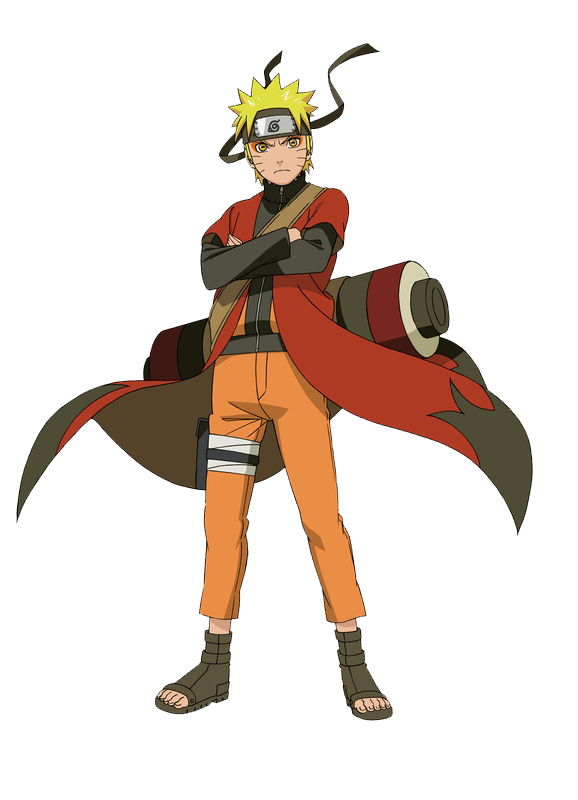

-
Pink haired boy who only had his grandpa. When the grandpa dies he ends up collecting musty fingers to eat.
Answer
Itadori Yuuji more info -
Tough high schooler with wild orange hair spending his time fighting evil spirits, all while looking like he’d rather be napping.
Answer
Kurosaki Ichigo more info
more info
-
A boar-headed, muscle-packed bundle of chaos, with a face so pretty it could make you forget he’s covered in battle scars
Answer
Hashibara Inosuke more info
more info
-
Boy who woke from a nightmare decides to commit genocide after eating his father.
Answer
Eren Yeager more info
more info
-
The shy, sweet ninja looking like a cinnamon roll, but can totally kick your butt when you least expect it!
Answer
Hyuga Hinata more info
more info
-
The “don’t mess with me” badass who could slice you in half while looking like she’s just out for a stroll.
Answer
Mikasa Ackermann more info
more info
-
A reckless, ramen-obsessed knucklehead with more heart than brains, too dumb to realize when he should give up
Answer
Uzumaki Naruto  more info -
A chihuahua who was too short for volleyball, so he rewrote physics instead.
Answer
Shoyo Hinata more info -
The only pirate who can turn raw determination into pure strength and could get lost on his own ship.
Answer
Roronoa Zoro more info -
Fashion sense of a background character but the brain of a final boss, his daily diet is 90% sugar and 10% pure intellect.
Answer
L Lawliet more info